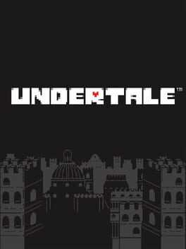
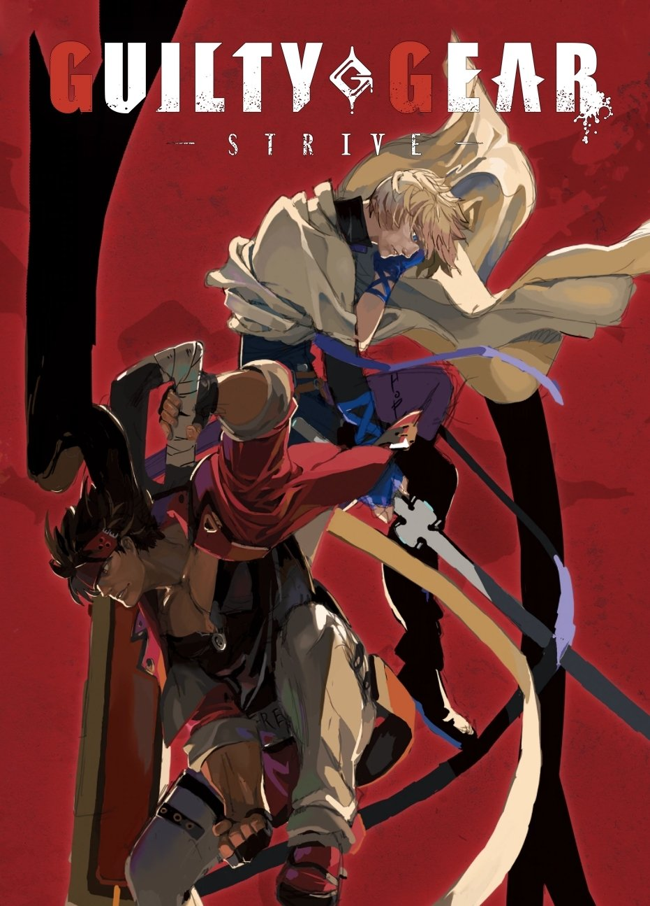
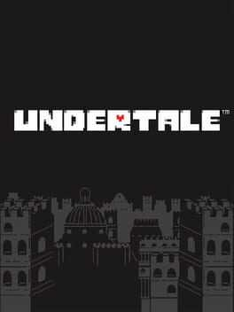
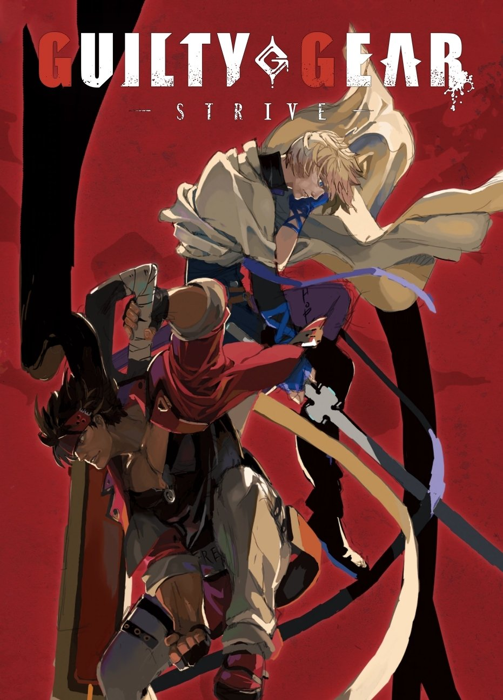

.
(click on a game to see my thoughts)
OMORI
my favorite game, with a few asterisks. its definitely is not the kind of game i'd just recomend to almost anyone, as it has some pretty major problems... i don't really think it's the 'best' game i've played, but it's still my favorite, if that makes since. the gameplay has some potential but is mediocre, the illustrated art is amazing but the pixel art is just okay (maybe borderline good), the music is great, but what really makes it my favorite is just the story being told. the characters are good but not amazing in my opinion (some of the dialogue in this game feels a bit off for me), but the overall premise / themes and the way they were portrayed was really resonated with me. i cried like a baby at the end, hehe... i think about this game a lot. it seems so close to perfection, and yet so flawed. i'll never forget it.
DELTARUNE
i remember initially being somewhat unimpressed with chapter 1 (and i still kind of am), but chapter 2 was INCREDIBLE, almost perfect in my opinion. if toby and his crew can keep up that level of quality, this will easily be my new favorite game. this is one of the few RPGs that isn't head back by it's gameplay, the combat system is fairly good (although still not amazing), and i think the plot and especially the characters extremely compelling. this is my most anticipated game of all time (and it will probably remain so for another 5ish years lol)
UNDERTALE
my childhood favorite. in hindsight, i don't think it's nearly as good as deltarune, but i still is a very important game to me personally. if i haven't played it, there's a good chance i wouldn't have ever started making games. it's what made me realize that games were art, if you'll excuse me being a little pretentious.
GUILTY GEAR -STRIVE-
i mentioned this game already but i loooooooooooooove it. it's funny because even though pixel art is my kryptonite, i honestly like this art style might be even better: i think strive is the best looking game ever made. i adore literally every single character both aesthetically and mechanically, and the game feel is superb (call me a dunce, but i will never get tired of the counter hit slow down). i can understand why fans of previous titles are a bit let down by strive, and i hope they maybe try to bring back some of the old complexity later down the line, but strive still has a ton of depth.
Team Fortress 2
my favorite multiplayer shooter by lightyears. it has a ton of depth while being very easy (and fun) to pick up and play. it's extremely well designed; all 9 classes and their interactions are well thought out, as were (for the most part) the plethora of unlockable weapons. the loadout system is amazing in this game; alternative weapons somehow completely change the way you play while simultaneously still feeling true to the class wielding them. there's also a ton of complexity to various mechanics, especially movement (trolldier main foreva!!), that i really appreciate. i don't play much TF2 anymore, but it will always be a classic.
Spelunky (1&2)
my favorite roguelike. i definitely understand why more modern roguelikes have developed the way they have, but i personally don't like how many (not all) of them sandaway most the rough edges from the oldschool traditional roguelikes, in particular the extreme consistency of the rules and the unpredictable (and sometimes unfair) results. i very much value every run being extremely unique and generating it's own story, and spelunky does this quite well. at the same time, it gains a lot of appeal by being a platformer and controls quite well in my opinion. of course, the downside of those rough edges is its not always as fair, which can be frustrating, but i think i have a higher tolerance for that but so i don't mind it too much
Inscryption
this game is a trip. the less you know going in, the better. and while every part of the game isn't perfect, there's a lot of really smart ideas here, byfar the most interesting premise for a card game i've ever played.